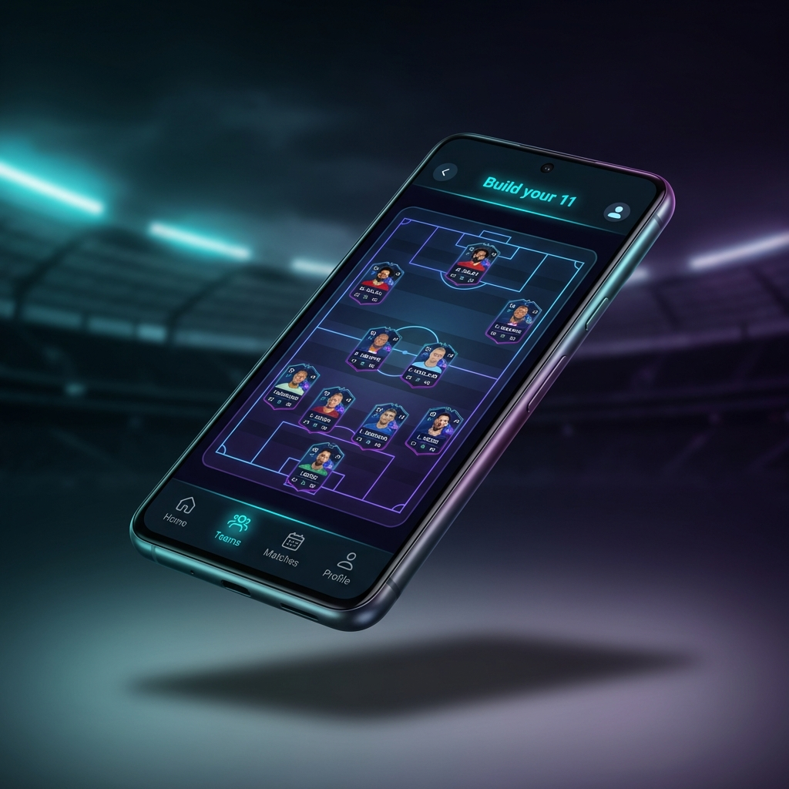

Dijital Tribünde
Yerini Al.
Toksisiteden arındırılmış, kulübüne özel bir ekosistem. Binlerce gerçek taraftarla canlı maç enerjisini hisset, tahminler yap ve ödüller kazan.

3 Adımda
Kabilene Katıl
Kayıt ol, kulübünü seç ve binlerce taraftarla birlikte maçları yaşamaya başla.
Kulübünü Seç
Taraftarı olduğun kulübü belirle. Kabilene gir, renklerini giyin.
Tribünde Yerini Al
Doğrulanmış taraftarlarla Dijital Tribün'de buluş. Toksik değil, gerçek taraftar enerjisi.
Maçı Birlikte Yaşa
Canlı tahminler yap, anlık reaksiyonlar ver, sıralamada yüksel ve ödüller kazan.
Taraftarlığı
Yeniden Tanımla
Pasif içerik tüketmek artık yetmiyor. Taraftaro ile maçın tam ortasındasın.
Dijital Tribün
Stadyum atmosferini evinize taşıyın. Canlı maçlarda binlerce taraftarla aynı anda reaksiyon verin, tribün sesini hissedin. Her gol, her kart, her kritik an — birlikte.
Taraftarın 11'i
Maç öncesi ideal kadronuzu kurun ve topluluğunuzla paylaşın.
Akıllı Anketler
Yapay zeka destekli anketlerle kolektif taraftar görüşünü keşfedin.
Taraftar İndeksi
Her yorumun, her tahminin puan kazandırdığı bir sıralama sistemi. Kulübünün en değerli taraftarı sen ol.
Kabile Yalıtımı
Yalnızca takımının taraftarları. Sosyal medyanın toksik tartışmaları yok. Saf taraftar enerjisi.
Canlı Maç Verileri
Anlık skor, oyuncu istatistikleri ve taktiksel analizler — hepsi tek uygulamada.
Tek Uygulama,
Sonsuz Tutku
Taraftaro ile maç günleri artık farklı. Skoru takip et, kabilenle reaksiyon ver, sıralamada yüksel.
Sıkça Sorulan
Sorular
Hayır. Taraftaro'yu indirmek ve temel özelliklerini kullanmak tamamen ücretsizdir. İleride özel içerik ve ayrıcalıklar sunan premium bir plan sunulabilir, ancak topluluğun tamamına açık özellikler her zaman ücretsiz kalacak.
Şu anda aktif beta aşamasındayız. App Store ve Google Play lansmanı için çalışmalar devam ediyor. İlk taraftarlar arasında olmak için aşağıdaki indirme bağlantısını takip et.
Süper Lig'deki tüm kulüpler öncelikli desteğimizde. Bunun yanı sıra Premier Lig, La Liga, Serie A, Bundesliga ve UEFA kulüp turnuvalarını takip edebiliyorsun. Topluluğun talebiyle kapsam sürekli genişliyor.
Mackolik veya SofaScore maç verisini pasif olarak sunar. Twitter toksik tartışmalarla dolu. Taraftaro ise kulübe özel yalıtılmış bir kabile ekosistemi kurar — yalnızca takımının taraftarları, yalnızca gerçek maç enerjisi. Dijital Tribün ve Taraftar İndeksi bu deneyimi benzersiz kılan özellikler.
Evet, Taraftaro hem iPhone (iOS 15+) hem de Android (8.0+) cihazlar için geliştirilmektedir. Her iki platform da eş zamanlı desteklenecek.
Maç tahminleri yaparak, Dijital Tribün'de reaksiyon vererek, günlük görevleri tamamlayarak ve ankettlere katılarak puan kazanırsın. Biriken puanlarla forma, maç bileti ve kulübe özel sürpriz ödüller edinebilirsin.
Kabilene Katıl.
Hemen indir, kulübünü seç ve binlerce taraftarla birlikte maçları yaşa.